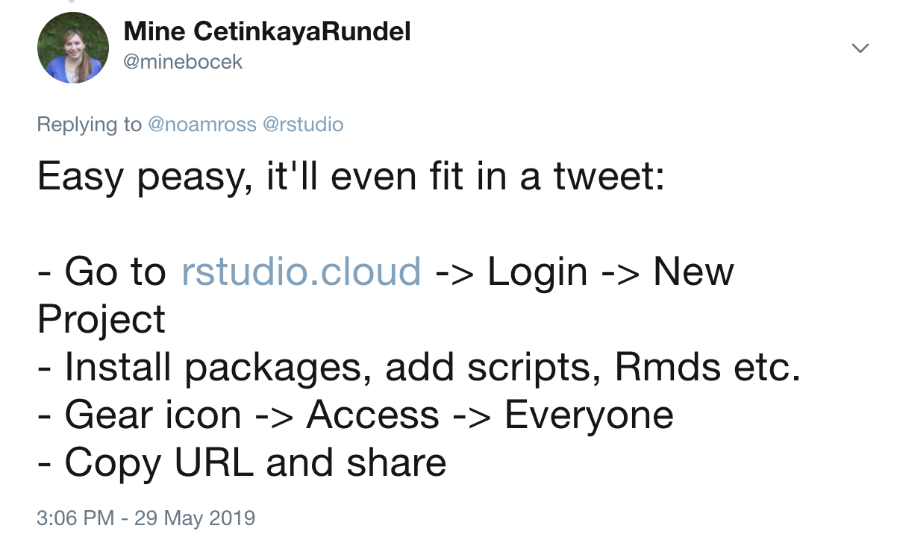
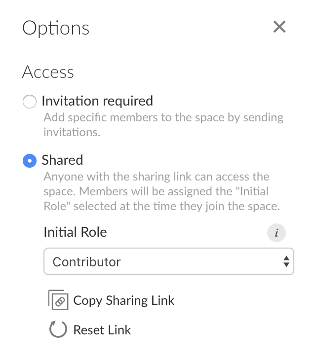
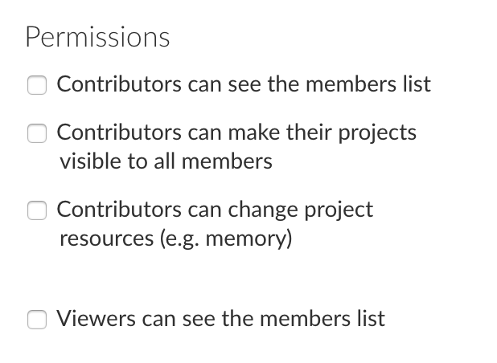
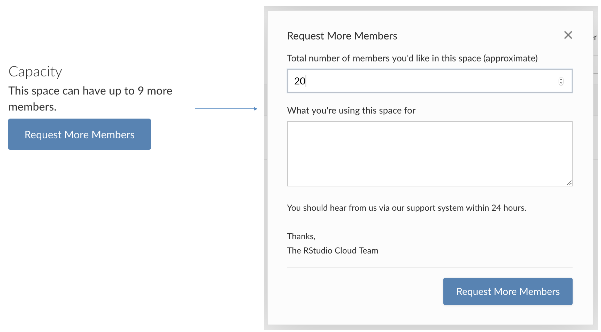
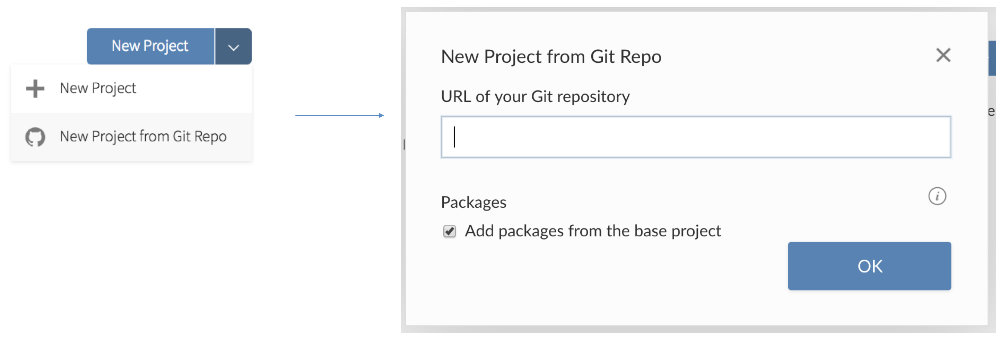
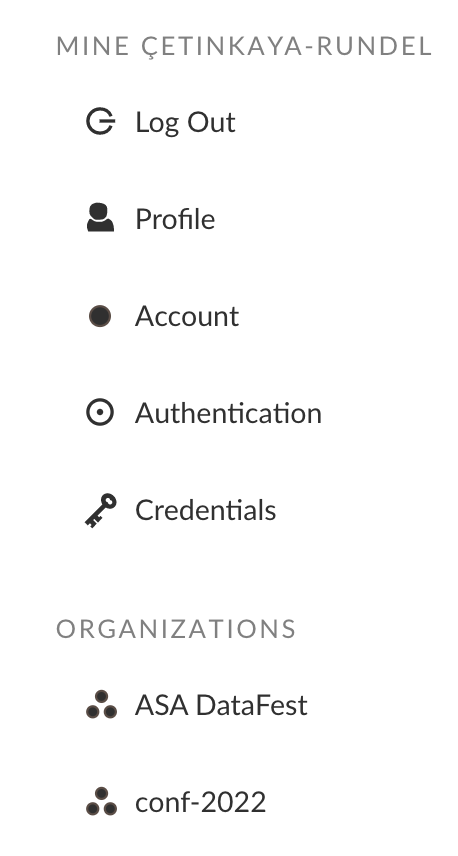
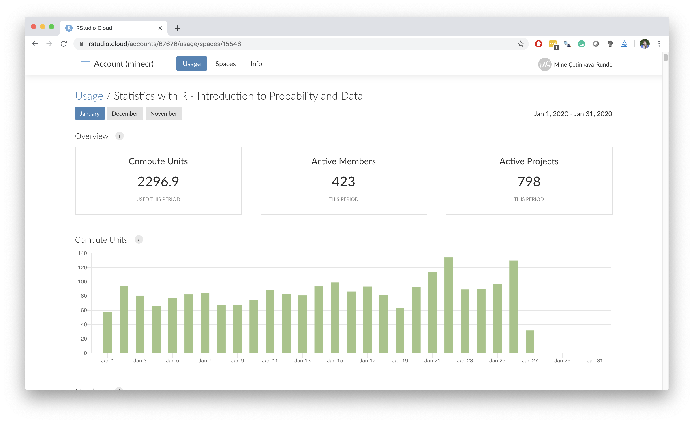
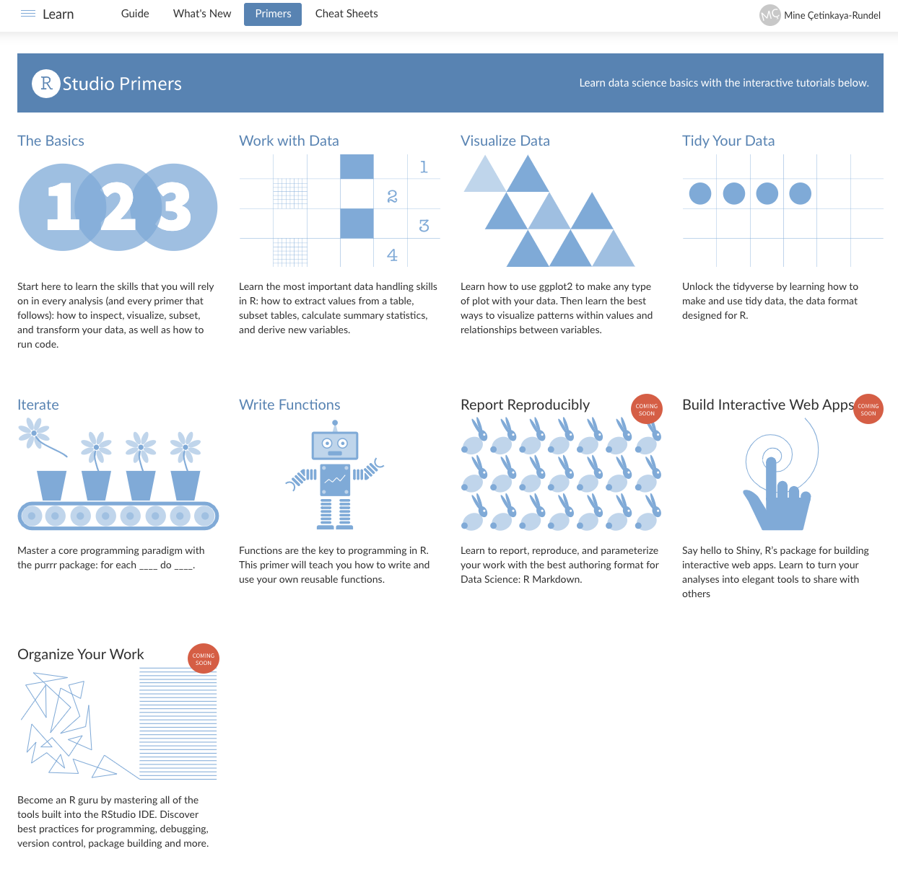

Computing infrastructure with RStudio Cloud
rstudio::conf(2022)
Designing the data science classroom
Mine Çetinkaya-Rundel
Recap
Yesterday…
- Module 1: “Start with cake” – Visualization (and in general hands on data analysis) as early as possible in the class, focusing on significant and motivating examples, and keeping baby steps out of classroom prime time, supported by computational infrastructure that helps make this happen.
- Module 2: “Teach the tidyverse” – For consistency, expressiveness, and opportunities for growth.
- Module 3: “Teach tidymodels” – For staying in the (consistent, and expressive) tidy ecosystem, easing teaching modern predictive modeling and modern simulation-based inference.
- Module 4: “Bring back the baby steps” – With interactive learnr tutorials with automated feedback, and leverage sister packages for formative or summative assessment with learnr.
Tidymodels in the curriculum
Intro data science:
- As part of main curriculum:
- Predictive multiple regression models
- Simulation-based inference for bootstrap intervals and hypothesis testing
- In looking further: A more advanced example (e.g., text classification) featuring recipe building and cross validation
Regression analysis / Stat 2:
- As part of the main curriculum:
- Multiple linear, logistic, and ordinal logistic regression as predictive as well as inferential models
- For predictive models: start with test/train split, build recipes, use workflows, conduct cross validation
- In looking further: Hyper-parameter tuning, or survival models, or spatial models
Flashback
Cherish day one
Don’t start like this
- Install R
- Install RStudio
- Install the following packages:
- rmarkdown
- tidyverse
- …
- Load these packages
- Install git
Start like this
- Go to rstudio.cloud
- Log in
Why RStudio in the cloud?
- Reduce friction at first exposure to R
- Avoid local installation
- Install R and RStudio on a server and provide access to students:
- Centralized RStudio server (*)
- Dockerized RStudio server (*)
- RStudio Cloud
Hello RStudio Cloud!
What is RStudio Cloud?

We created RStudio Cloud to make it easy for professionals, hobbyists, trainers, teachers, and students to do, share, teach, and learn data science using R.
An RStudio project

An RStudio Cloud project

Why RStudio Cloud?
- Does not require IT support
- Features designed for instructors:
- Classes can be organized in workspaces
- Members can be assigned different roles: instructor, TA, student
- Projects can be public or private
- Projects can be made into assignments
- Students can make copies of projects created by instructor
- Instructor can peek into student projects
- A base project template can ensure same packages in each new project created in the workspace
- Git works out of the box
Contexts
- Semester long courses
- Intro data science / statistics: little to no background in stats, data science, programming
- Upper level data science / statistics: Varied computing background and different computer setups
- Shorter workshops: Likely no opportunity to communicate pre-workshop instructions, varied computing background and learning goals
Your turn!
Log out of RStudio Cloud and log back in.
03:00
Workspaces
When you create an account on RStudio Cloud you get a workspace of your own
You can add a new workspace and control its permissions
Projects in either workspace can be public or private
Projects
A new project in RStudio Cloud
is basically a new project in the RStudio IDE
Tip
If you use RStudio, use projects! Trust me, you won’t regret it. Find out more at r4ds.had.co.nz/workflow-projects.html.
Projects from Git
- A new project from Git Repo in RStudio Cloud
- is creates (cloning) a project from a Git repository RStudio
Teaching a short workshop
Setup in 140 characters
Iconography
👩🏫 teacher
👩💻 student
Some title
👩🏫
👩🏫
Sharing an individual project
Good!
- Students land directly in a project upon login
- Works well for workshops where all work will be completed in a single project
- Also great for sharing code in general, e.g. collaboration, reprexes, etc.
Not so good…
- Students need to remember to make a copy of the project (which means you need to remember to remind them!)
- Changes you make after student launches the project won’t propagate to their project
Your turn: Create a sharable project
First you’re the instructor:
- Create a new project and give it a name.
- Create a template R Markdown document in the project.
- Change the access level of the project so others can see it as well.
- Grab the project URL and share it with your neighbor:
- Tip: You can create a short link for the URL at bitly.com.
Now you’re the student: Access your neighbor’s project as if you’re the student and they’re the instructor.
10:00
Teaching a longer course
👩🏫
Your turn: Create a workspace
You’re the instructor:
- Create a new workspace and give it a name.
- Tip: Check in with your neighbor and use a different name.
- Add a short description.
05:00
Getting students into class workspace
Under the Membership tab:

- Make workspace shared for a short period of time, share link with students, enroll them as contributors.
- After drop/add switch over to this access level
- Use invitations for visitors added mid-semester
👩🏫
Permission levels
| role | permission | course role |
|---|---|---|
| admin | manage users, view, edit and manage all projects | instructor |
| moderator | view, edit and manage all projects | TA |
| contributor | create, edit and manage their own projects | student |
| viewer | view projects shared with everyone | auditor |
👩🏫
Permissions
Under the Membership tab:

- By default, all permissions are turned off
- Think carefully before checking these boxes
👩🏫
Capacity
👩🏫
Your turn: Adjust settings
You’re the instructor:
- Change the settings of your workspace to Shared.
- Change the permissions so that contributors or viewers can’t see the list of members and can’t change the visibility of their projects.
03:00
👩🏫
Your turn: Create an assignment
You’re the instructor:
- Add a base project to your workspace:
- Install one or two of your favorite packages.
- Start an R Markdown document so necessary packages get installed.
- Add a code-of-conduct.md (you can copy-paste from here if you like) or some other plain text document.
- Make this project visible to everyone. In the settings menu, set this project as the base project.
- Create a new assignment:
Homework 01.
10:00
👩💻
Your turn: Assign work
You’re the instructor: - Grab the sharing link for your workspace. - Optional: Make a short link for it. - Share it with your neighbor.
Now you’re the student: - Access your neighbor’s workspace and start the assignment.
05:00
Git integration
Base project template can be used, so new project from git also has the right packages installed!
Sharing a workspace
Good!
- Various permission levels
- Base projects with desired packages installed
- Assignments, which remove the need to remind students to make a copy of the project before starting work
- Ability to peek into students’ projects
Not so good…
- Students land in the workspace, may need to provide instructions for the next steps
- You can update the base project throughout the course, but it will only be applied to projects created going forward
Institution accounts
Dashboards
Student usage / engagement metrics
📦 rscloud
- A new package for managing RStudio Cloud spaces with R: github.com/rstudio/rscloud
- Requires an API key, which any instructor can request (via email for now, but soon in the UI as well)
Collaborative editing
Instructor and student can collaboratively edit a script
Environments are not shared
Demo!
Parting remarks
Tips
- Each project is allocated 1GB of RAM
- Test things out before assignments involving large datasets
- What your students see is not always what you see
- Create a secondary account and add as a student
Primers

- Free primers made with the learnr package
- Companion to R4DS by Grolemund and Wickham
Discussion
What models can you envision for collecting assignments and providing feedback when teaching with RStudio Cloud?
03:00
For next session…
Click the link to submit your GitHub username and team name.
You will receive an email invite to the teach-ds-conf22 GitHub organization during the break. Accept the invitation to join the organization.